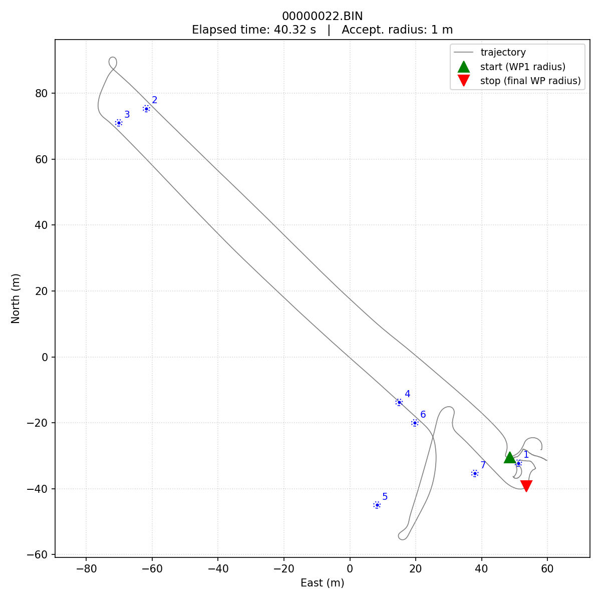
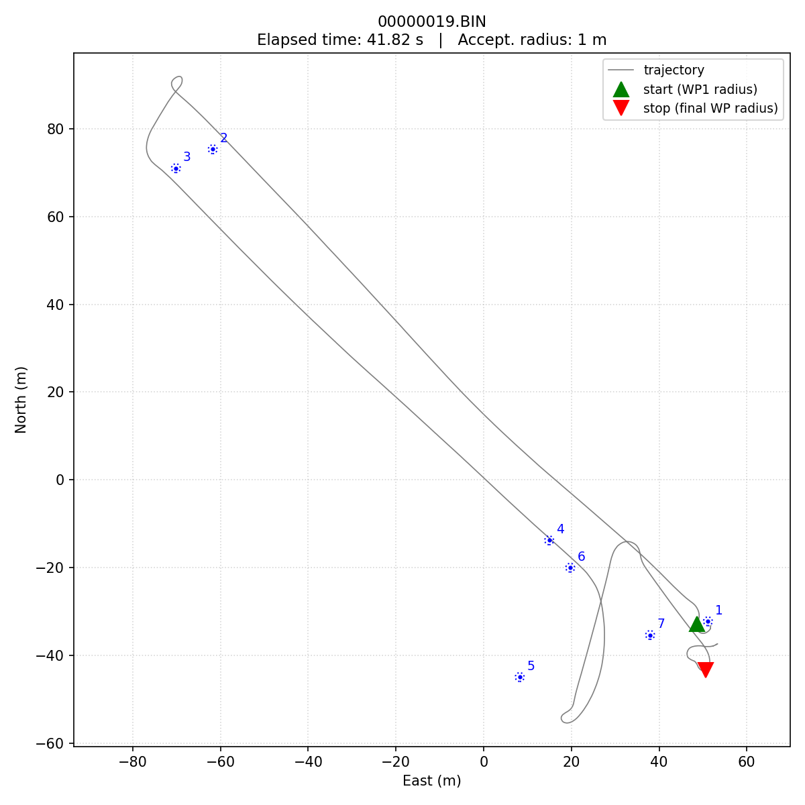
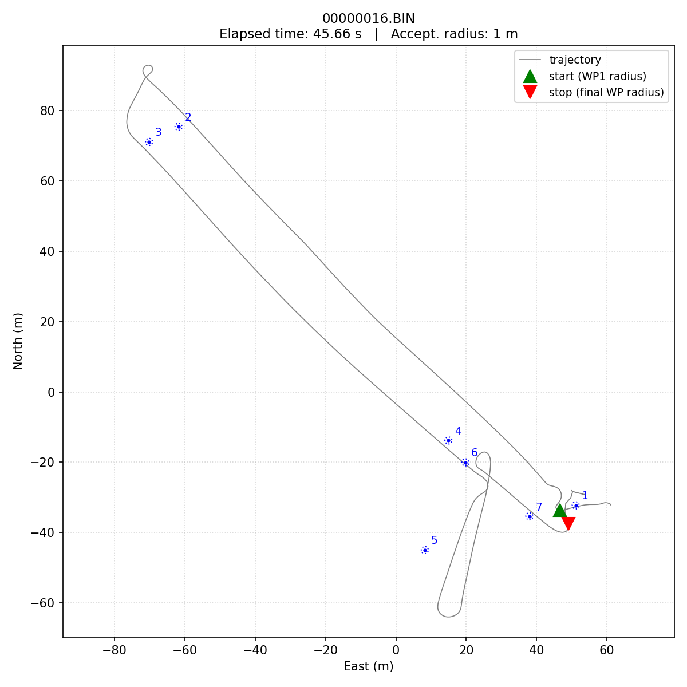
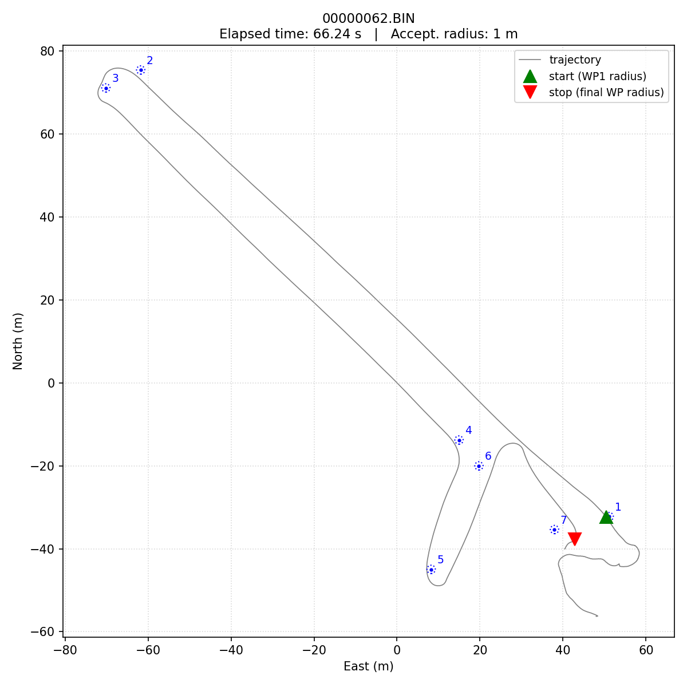
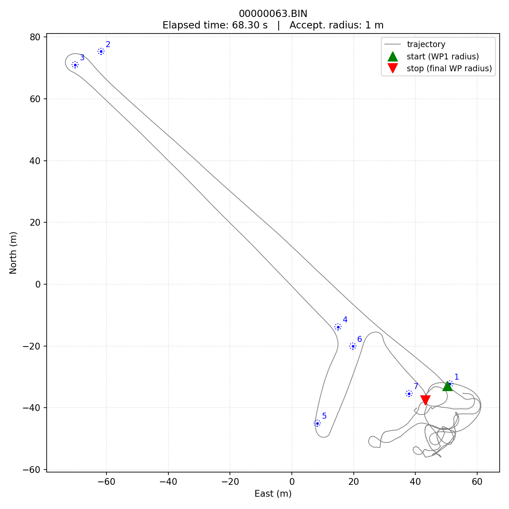
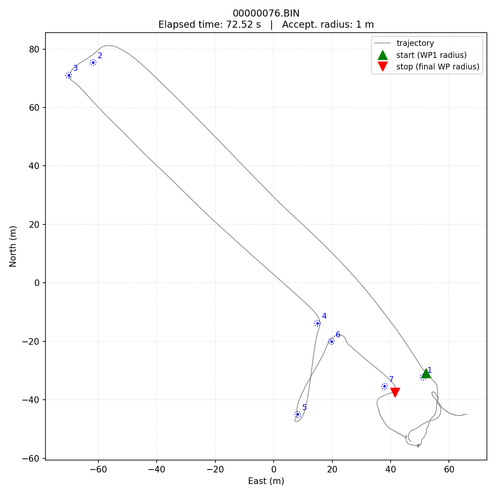
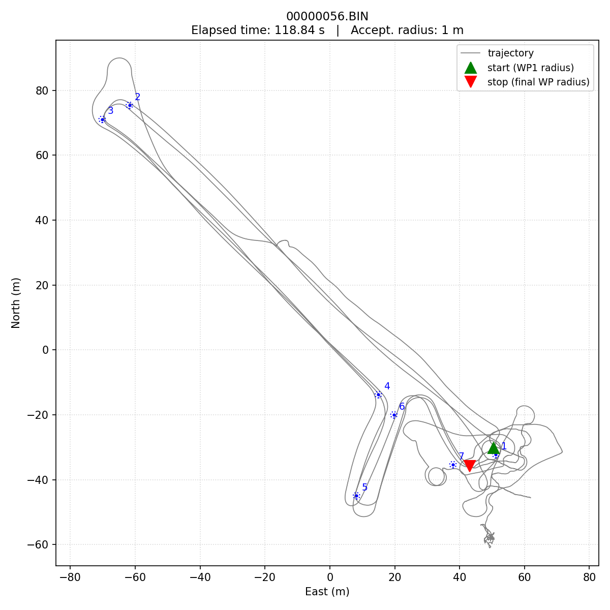

Lab 3 Leaderboard — AY26 Q3
USV Waypoint Mission Challenge — Day 1 (2026-06-03) and Day 2 (2026-06-04)
Highlight videos
More to come.
Final standings
Best course time per team after Day 2. Times are the autopilot’s own WP1-to-WP7 elapsed, as logged in the MSG “Reached waypoint #N” events — see Scoring notes below.
| Rank | Team | Best time | UTC time of run | Log |
|---|---|---|---|---|
| 1 | team3 | 00:40 (40.3 s) | 2026-06-04 19:08:31 | 00000022.BIN |
| 2 | cyborgs | 01:06 (66.2 s) | 2026-06-04 18:15:36 | 00000062.BIN |
| 3 | blackpearl | 01:59 (118.8 s) | 2026-06-04 18:29:46 | 00000056.BIN |
| Instructor benchmark | 03:13 (193.4 s) | 2026-05-29 (prototype day) | — |
Headline: every team improved on Day 2, and team3 made the largest jump — from 103.4 s on Day 1 to 40.3 s on Day 2 (~60% faster), enough to overtake cyborgs and take the win.
Day-over-day improvement
| Team | Day 1 best | Day 2 best | Δ |
|---|---|---|---|
| team3 | 103.4 s | 40.3 s | −63.1 s |
| cyborgs | 75.2 s | 66.2 s | −9.0 s |
| blackpearl | 205.8 s | 118.8 s | −87.0 s |
Per-team breakdown
Parameter-change summaries are general descriptions, not exact details. The point is to convey what each team tuned, not to give away their recipe.
team3 — 1st, 40.3 s
Day 2 top 3:
| # | Time | UTC | Log |
|---|---|---|---|
| 1 | 00:40 (40.3 s) | 2026-06-04 19:08:31 | 00000022.BIN |
| 2 | 00:42 (41.8 s) | 2026-06-04 19:05:47 | 00000019.BIN |
| 3 | 00:46 (45.7 s) | 2026-06-04 19:00:26 | 00000016.BIN |



Day 2 strategy. team3 came back to the field having learned the lesson from Day 1’s extreme settings — that asking for 40 m/s when the boat tops out at ~3 m/s buys you nothing. Their Day-2 logs show an iterative speed escalation: 8, 11, 14, 15, 15.5, 16 m/s, dialing in the highest target the boat could actually follow. They also bumped the turn radius up from ~1 m to 5 m, letting the autopilot cut wide arcs through the corners instead of trying to pivot tight; cut the throttle baseline bias from max to half; reduced the steering derivative gain; and tested very-small acceptance radii (0.1 m) before going back to 1 m. Net: same aggressive-and-repeatable temperament as Day 1, but pointed at targets the plant could actually deliver. Result: six complete runs on Day 2 with a clear improvement arc (58 → 60 → 51 → 46 → 42 → 40 s).
Day 1 results (for reference): four runs clustered 103-108 s, best 103.4 s.
cyborgs — 2nd, 66.2 s
Day 2 top 3:
| # | Time | UTC | Log |
|---|---|---|---|
| 1 | 01:06 (66.2 s) | 2026-06-04 18:15:36 | 00000062.BIN |
| 2 | 01:08 (68.3 s) | 2026-06-04 18:21:43 | 00000063.BIN |
| 3 | 01:13 (72.5 s) | 2026-06-04 18:55:50 | 00000076.BIN |



Day 2 strategy. cyborgs came in with the strongest Day-1 baseline and chose to refine rather than rebuild. Their Day-2 logs show only modest tuning changes: cruise/waypoint speed bumped from 10 to 15 m/s, some experimentation with the speed-axis acceleration limit. The first two Day-2 runs (BINs 62 and 63) were their fastest of the whole challenge — they got most of their improvement in the first hour. The remaining Day-2 runs sat slightly slower but still under 90 s. A controlled, low-variance approach that hit a local optimum quickly.
Day 1 results (for reference): seven runs, clear iteration arc 195 → 88 → 75, best 75.2 s.
blackpearl — 3rd, 118.8 s
Day 2 top 3 (only one successful run):
| # | Time | UTC | Log |
|---|---|---|---|
| 1 | 01:59 (118.8 s) | 2026-06-04 18:29:46 | 00000056.BIN |

Day 2 strategy. blackpearl ran the broadest parameter search of any team. Their Day-2 logs show five different WP_SPEED settings tried (2, 3, 3.5, 8, 14 m/s), multiple iterations on both speed-loop and steering-loop PIDs, a mid-session change to the mission file itself (MIS_TOTAL 8 → 11, suggesting they uploaded a different waypoint set), and a steady increase in TURN_RADIUS from ~1 to 3 m. The exploration was thorough; the conversion rate was low — only one of the ten Day-2 logs produced a complete-course run, and the boat had clearly settled on its high-speed configuration by then. Big improvement over Day 1 (205.8 s → 118.8 s) but the breadth-of-search approach didn’t yield the tight iteration arcs that team3 and cyborgs produced.
Day 1 results (for reference): one complete run, 205.8 s.
What the two days tell us
Three different strategies, three different outcomes. The team that came in furthest behind on Day 1 (team3) ended the challenge in 1st place, having recognized that their Day-1 setup was asking for things the boat couldn’t deliver and rebuilt around realistic targets. The team that led on Day 1 (cyborgs) defended well but didn’t make a comparable leap. The team in the middle (blackpearl) used Day 2 to explore broadly rather than commit to a known-working baseline, and paid for it in low yield of finished runs.
The relationship between Lab 2 stabilization tuning and Lab 3 course time held throughout: every successful Day-2 run was made with target speeds the boat’s surge dynamics could actually follow. The runs that didn’t finish were almost always trying to ask the plant for something outside its envelope.
Scoring notes
A complete-course run is one where the autopilot’s MSG log contains "Reached waypoint #N" for N = 1 .. 7 in that order. This is the autopilot’s own mission-advancement signal, which uses both of:
- The boat entering the waypoint’s acceptance radius (
WP_RADIUS). - The boat crossing a “finish line” — a line through the waypoint, perpendicular to the path segment leading to it. Once the boat is on the far side of that line, the autopilot treats the waypoint as reached even if the boat never came inside
WP_RADIUS.
The second condition is the surprising one and matters at speed. At the AY26 Q3 course geometry, a boat moving above ~3 m/s can legitimately overshoot a waypoint without ever dipping inside a 1 m radius. The autopilot still advances the mission, the MSG log still records “Reached waypoint #N”, and on the water the team sees a clean lap — but a scoring script that only checks WP_RADIUS entry will undercount finishes. This is exactly what happened to team3’s Day-1 results before the scoring script was corrected.
The behavior is documented (loosely) in the ArduRover → Tuning Navigation page (look for WP_OVERSHOOT and the “finish line” discussion). ArduPilot issue #23457 — “AR_WPNav: Rover 4.3+ does not honor WP_RADIUS” — has more candid detail on how the perpendicular check has effectively superseded the radius check since the 4.3 navigation rewrite.
Notes
- Per-team strategy summaries are drawn from the evolution of PARM values across each team’s Day-2 logs (parameters that took on more than one distinct value, with sensor calibration and boot-statistics noise filtered out). Underlying logs are in
/data/ME2801_USV/2026_06_03_challengeday1/logs/(Day 1) and/data/ME2801_USV/challengeday2/logs/(Day 2), instructor-only access. - Trajectory PNG files for every successful run are saved alongside their
.BINlog in the data directories. - The instructor benchmark (193.4 s on the prototype day) is preserved as a comparison row but is not part of the team standings.